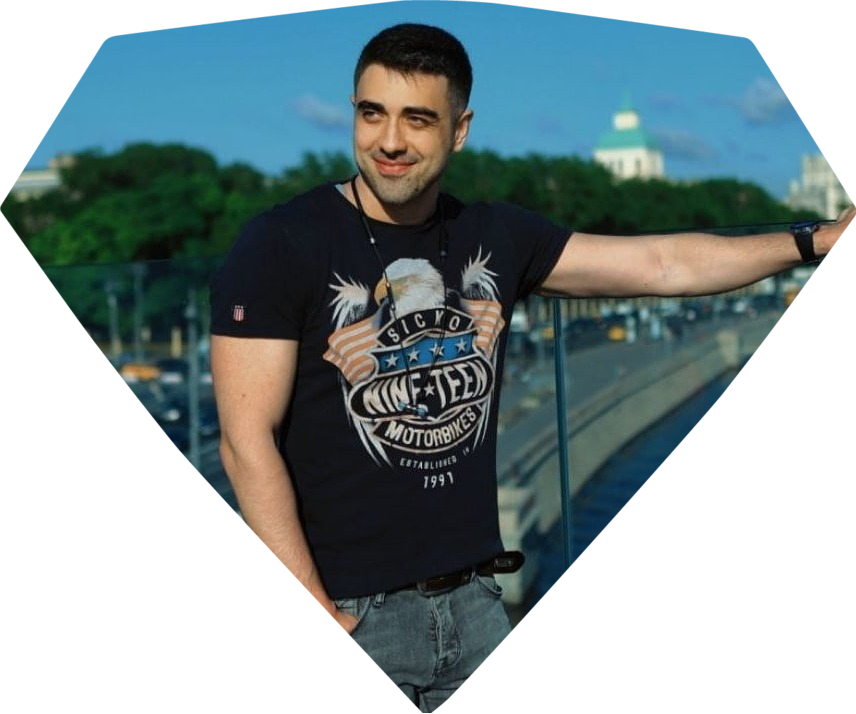

Максим Козаев
Разработчик Ruby on Rails

Навыки
Опыт работы
Июль 2017 --- по настоящее время
Январь 2017 --- Июль 2017
Май 2015 --- Октябрь 2016
Сентябрь 2010 --- Август 2014
Февраль 2008 --- Сентябрь 2010
ИВЦ МВА
Руководитель отдела IT
Бизнесс Инфинити Групп
Инженер
АО "Россельхозбанк"
Начальник ИТ отдела
ОАО АКБ "Адамон Банк"
IT директор
ГУ-УПФР(Пенсионный фонд) по г. Владикавказ
Ведущий специалист-эксперт
Образование
Северо-Кавказский горно-металлургический институт (Государственный технологический университет) г. Владикавказ
Факультет информационных технологий. Бакалавр техники и технологий, по направлению информатика и вычислительная техника.
Знание языков
Русский.
Английский.